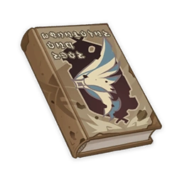

Mondstadt · Books & Literature
"Of Mountains and Seas"
A damaged journal and adventurer’s guide by Leonard, whose attempt to climb Pilos Peak is recovered during the Unreconciled Stars story.

Record overview
The in-game title is "Of Mountains and Seas," A Guide for Adventurers. Characters identify its author as Leonard, an adventurer from roughly two thousand years before the present story. The volume is an old, damaged journal: pages are faded or missing, so the text that readers encounter during Unreconciled Stars has been reconstructed by Mona rather than copied from a fully preserved original.
Its known subject is Leonard’s attempt to reach Pilos Peak. The title may sound like a broad geography book, but the surviving story centers on one climber, one mountain, and the ambition that outlasted his expedition.
Leonard and his expedition
Leonard describes himself as an experienced traveler who had already crossed many domains. Pilos Peak was different: its height, snow, and smooth, difficult slopes repeatedly defeated the routes he planned. His notes mention making surveys, considering ropes and stakes, and looking for companions willing to attempt the ascent.
The expedition was not a simple triumph narrative. Leonard and his companions faced poor conditions, a lack of safe routes, injuries, and dwindling supplies. The surviving record therefore gives the mountain its force through practical obstacles rather than treating it as a magical enemy with a known weakness.
Pilos Peak and modern Mondstadt
In Where Ancient Stars Align, Mona compares Leonard’s old map with the land as it exists in the present. She concludes that Pilos Peak no longer stands as a mountain. The quest identifies the summit that remained above the water as Musk Reef, connecting the old expedition to the location that players can visit today.
Mona relates the change to Barbatos’s reshaping of Mondstadt with the wind. This is a specific in-game explanation given during the quest; the journal itself is not a complete account of the Anemo Archon’s terraforming or of every change to Mondstadt’s coastline.
The Wings of Incompletion
As he reaches the end of his life, Leonard turns from climbing the peak himself to imagining how people might overcome limits through tools and flight. He leaves designs known as the Wings of Incompletion to a friend and hopes that a later generation will reach the places beyond his own reach.
The design links Leonard’s personal failure to Mondstadt’s later gliding culture. It is a record of human ingenuity and an unfinished ambition, not evidence that Leonard invented the modern Wind Glider or personally met Barbatos.
Unreconciled Stars and the old wish
The Unreconciled Stars event brings Leonard’s story into the present through a meteor shower and a group of people who fall into a sleep centered on climbing Pilos Peak. Mona identifies a meteorite core as the source of the danger and connects it to Leonard’s lingering spirit and desire. The Traveler destroys the core, allowing the affected people to wake.
This event explains why a long-lost adventurer’s book matters to the quest. It does not establish a general rule that every meteorite contains a person’s spirit or that every constellation can manifest in the same way.
What the record establishes
The book and quest establish Leonard as an ancient Mondstadt adventurer, his failed effort to climb Pilos Peak, his plans for the Wings of Incompletion, and the later connection between the old peak and Musk Reef. The quest also supplies the supernatural role his wish plays in Unreconciled Stars.
The journal is incomplete and partly reconstructed in the story. Its missing pages do not support invented geography, a full biography of Leonard, or details about the mountain that the recovered notes and quest dialogue never provide.
This is an original CoreGG reading guide, not an official HoYoverse article or a reproduction of the game text. Source links below identify the records used so you can check the original context.
Sources & references
Check these sources for the original game text and reference trail.